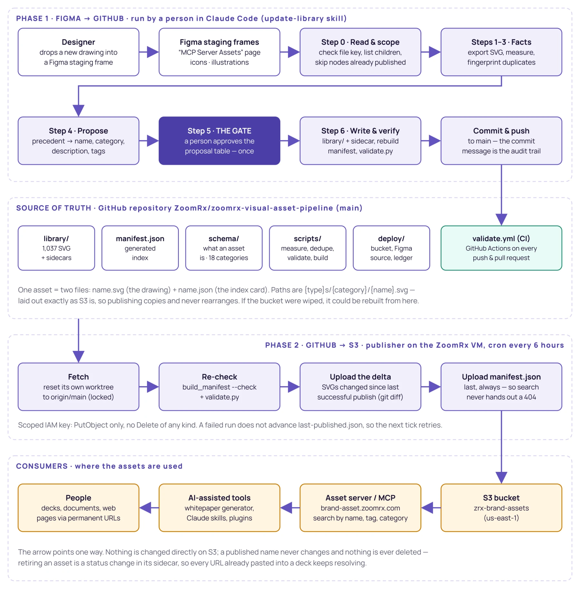
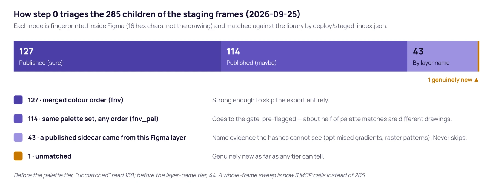
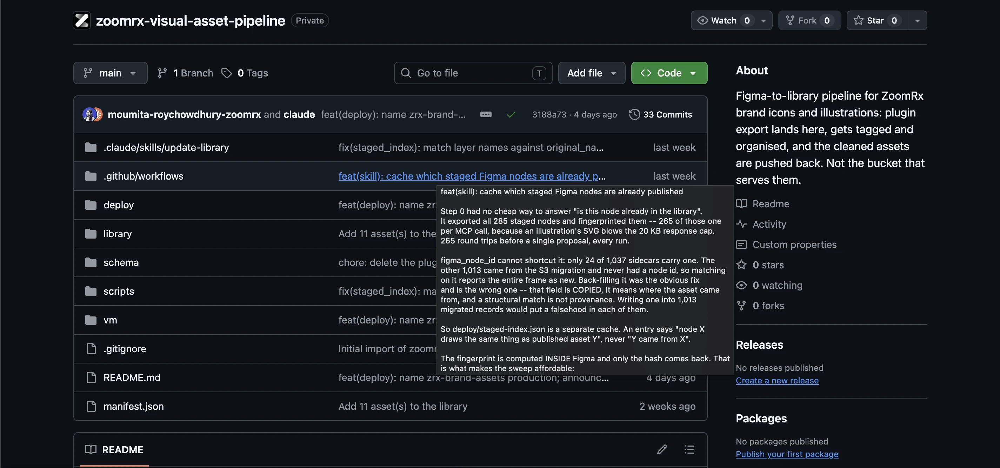

Designed, built and run end to end
Visual design team and every internal tool that needs brand assets
Figma, GitHub, a Claude skill, AWS, an MCP asset server
Live and in production
The problem
A Figma file is the right place to draw and hold assets, and the wrong place for anything other than Figma to read them from. More and more work at ZoomRx is produced with AI-assisted tools, and they can't open, search or pull from a Figma file.
So every asset the design team made was invisible to those tools, and to anyone who doesn't live in Figma. People either went without, or used something generic.
The goal
Figma stays where assets are made. Every approved asset also lives somewhere tools can reach: one library, one name and one permanent address per asset, and a person, not a system, deciding what gets in.
An asset added to the library becomes available to every tool at once, with nobody asked to update anything.
How it works
Decisions worth explaining
- A human gateAutomated checks are good at catching near-copies. A name and a category are judgements about meaning, so a person confirms them.
- Zero prep for designersLayer names like “Group 1234” are fine. Removing that work is what makes the team actually use it.
- Publish on a clockAssets arrive a few times a week, so four scheduled runs a day are fast enough, cheap, and leave a log that answers “did it run?” at a glance.
- The repo is the recordNothing is edited in the bucket, only written to it. The whole library can be rebuilt from version control.
From a Figma frame to a permanent URL: how ZoomRx turned its icons and illustrations into a library every tool can reach
A technical case study of ZoomRx/zoomrx-visual-asset-pipeline: the problem it solves, the architecture behind it, how each phase works step by step, and why every folder and file in the repository exists.
The ZoomRx brand asset library and the two-phase pipeline that keeps it current — a Claude Code skill (Figma → GitHub) and a scheduled publisher (GitHub → S3).
github.com/ZoomRx/zoomrx-visual-asset-pipeline (branch main)
Moumita Roy Chowdhury, Product Experience team
Publisher deployed by the ZoomRx tech team on the shared AWS VM that already serves the brand assets
Initial import 9 Sep 2026 · VM publisher 11 Sep · single-skill redesign 17 Sep · repository reconciled with the deployment review 23 Sep · fingerprint tiers 23–25 Sep · production bucket named 28 Sep 2026
Live. 1,037 assets (732 icons, 305 illustrations) in 18 categories, published to zrx-brand-assets and served by the asset server behind brand-asset.zoomrx.com.
1. Executive summary
ZoomRx's icons and illustrations are drawn and kept in Figma. That is the right place to make them, and the wrong place for anything other than Figma to read them from. A growing share of ZoomRx work is now produced with AI-assisted tools — the whitepaper generator, Claude skills and plugins, internal page builders — and none of them can open a Figma file, search it, or take an asset out of it. The same is true for most people at ZoomRx who do not work in Figma every day.
This repository is the answer. It is the operational source of truth for every approved ZoomRx brand asset, and it contains the machinery that moves an asset from a designer's Figma frame to a permanent web address:
- Phase 1 — Figma → GitHub. A Claude Code skill,
update-library, reads the Figma staging frames over the Figma MCP, exports and measures each new drawing, checks whether it has been seen before, proposes a name and metadata, and stops at a person once. Only what the person approves is written intolibrary/, validated, and pushed tomain. - Phase 2 — GitHub → S3. A small Python publisher on the ZoomRx VM wakes every six hours, fetches
main, re-runs the repository's own checks, uploads only the drawings that changed since the last successful publish, and uploadsmanifest.jsonlast. The asset server behind brand-asset.zoomrx.com reads the same bucket, so a publish is visible to every connected tool without a second step.
The design rests on one sentence from the README: "We decide here. S3 just hands things out." The arrow points one way. Nothing is ever changed directly on S3, a published name never changes, nothing is ever deleted, and if the bucket were wiped it could be rebuilt from this repository.
It is a small system — roughly 2,500 lines of Python plus one long skill file — but nearly every line exists because a real run failed in a specific, measurable way. The repository documents those failures in its comments and commit messages, so the reasoning behind each design choice can be traced to evidence: a 70-icon run that died of context exhaustion, a duplicate check that reported 0 of 285 staged drawings as published when 183 were, a sandbox bucket that silently received 1,025 objects.
2. The problem statement
2.1 The core problem: assets that only Figma can see
Every icon and illustration the visual design team has produced lives in a Figma file. For designers, that is exactly where it belongs. But a Figma file can only be reached by someone with Figma open in front of them. AI-assisted tools cannot use it directly, so the team's assets are invisible to them however well the file is organised. Whoever uses those tools is left with two poor options: produce the work with no assets at all, or substitute something generic that did not come from the design team.
2.2 What made it hard
Putting files in a bucket is easy. Putting them there in a way that stays correct for years is not. The problem broke down into a set of concrete constraints:
| Constraint | Why it matters |
|---|---|
| Permanent addresses | Once an asset's URL is pasted into a deck or a generated document, it must keep resolving. Renaming or deleting an asset silently breaks work that has already shipped. |
| One trustworthy source | Before this repo, the live library existed only as objects in S3 (zrx-brand-assets-test, last written April). There was no reviewable record of what was there, why, or who decided. |
| Search-quality metadata | Tools find assets by text. A drawing is only useful if it carries an accurate name, category, description and tags — and naming is a judgement, not a fact. |
| Duplicates are invisible | The 1,013 assets migrated from S3 had been run through an SVG optimiser. A fresh Figma export of the same drawing is never byte-identical to its published copy, so a naive hash check calls every one of them new. |
| Messy inputs | The staging frames hold auto-generated layer names (Group 40019), trailing spaces, typos (AI chating ) and at least one drawing staged twice. |
| AI context limits | Figma MCP responses are capped at 20 KB; reading the 915 KB manifest whole costs about 234,000 tokens. A 70-icon run on 23 Sep 2026 died of context exhaustion before proposing anything. |
| Infrastructure rules | The ZoomRx org shares a 3,000 GitHub Actions-minute monthly cap across 290+ repositories, and AWS credentials are not stored in GitHub secrets. Publishing could not run in Actions. |
| Shared machine | The VM also runs the ZoomRx.com blog and the brand-asset MCP server. Any credential placed there must be as narrow as possible. |
2.3 The objective
Figma remains where assets are made. Every approved asset is also placed somewhere internal tools can reach: one library, one name per asset, one permanent address per asset, and a person — not a system — deciding what is admitted.
3. Design principles
Five rules are repeated in the README, the skill and the code. They are the contract every component is built around.
| Rule | What it means in practice | Where it is enforced |
|---|---|---|
| 1. A published name never changes | The URL is already in somebody's deck. A better name is added alongside; the old one is marked retired. | validate.py check 7 against deploy/published-names.json |
| 2. Nothing is ever deleted | Retiring stops an asset being offered in search; the file stays forever. | IAM policy has no DeleteObject; delete_on_sync: false; git delta uses --diff-filter=ACMR (no D); test fake raises if delete is called |
3. file_path is derived, never typed | Always {type}s/{category}/{name}.svg. | measure_asset.derive_file_path; validate.py check 3 |
| 4. Files upload before the manifest | Otherwise search could hand out a URL that 404s. | publish.publish() uploads SVGs, then the manifest, unconditionally |
| 5. The proposal table is the only gate | Claude only suggests. Whatever the person approves reaches S3 within six hours. | Skill Step 5; nothing is written to library/ before the answer |
Three further ideas shape the architecture:
- Facts and judgements are separated. Every field on an asset is labelled by provenance — MEASURED, SUGGESTED, COPIED, DERIVED or LIFECYCLE. Scripts compute facts; Claude proposes judgements; a person approves them. Only SUGGESTED fields are ever Claude's to fill.
- Deterministic tools, probabilistic assistant. Anything that can be computed — hashes, sizes, fingerprints, paths, validation — lives in a Python script with tests. Claude is used only for what genuinely needs reading a picture and choosing words.
- Report, never refuse. Duplicate and precedent tools surface evidence and exit 0. Deciding whether a repeat is a mistake or a deliberate re-export is the human's job at the gate.
4. Architecture
4.1 The end-to-end picture

4.2 Components and responsibilities
| Component | Runs where | Responsibility | Credentials it holds |
|---|---|---|---|
| Figma staging frames | Figma file lYxdTv4HjpMZAVhFILeGFJ, page "MCP Server Assets" | Where designers drop new drawings. Two frames: icons and illustrations. The frame decides an asset's type. | — |
update-library skill | Claude Code on the librarian's laptop | The whole Figma → GitHub half: scope check, triage, export, measure, dedupe, propose, gate, write, validate, commit. | The person's own Figma seat (Dev/Full) and gh login |
scripts/ | Laptop, CI and the VM | Deterministic tools: measure, fingerprint, precedent lookup, manifest build, validation. | None |
GitHub repository (main) | GitHub | Source of truth: library/, manifest.json, schema, config, ledger. | — |
validate.yml | GitHub Actions | The one workflow: validates every push and pull request. A few minutes a month. | None |
VM publisher (vm/) | Shared ZoomRx AWS VM, cron every 6 h | The GitHub → S3 half: fetch, re-check, delta upload, manifest last. | Read-only git token; scoped IAM user key in .env (no delete) |
S3 zrx-brand-assets | AWS us-east-1 | Hands assets out. Never edited directly. | — |
| Asset server / MCP | brand-asset.zoomrx.com | Reads manifest.json and serves search and URLs to tools. | — |
4.3 Trust boundaries and why they sit where they do
- No AWS credential on a laptop, and none in the repository. The skill only commits to git. Only the VM can write to S3.
- No Figma credential on the VM. The publisher never talks to Figma; it publishes what is already on
main. - No AWS credential in GitHub. Publishing via Actions would need AWS↔GitHub OIDC federation, which has not been proven, and would burn the shared minute cap. The
deploy.ymlworkflow that once did this was deleted on 23 Sep 2026; reintroducing it is described in the repo as "a regression, not an improvement". - The bucket is the repository's decision. The publisher reads
deploy/config.jsonfrom the checkout it is publishing. There is no built-in default bucket anywhere in the code.
4.4 The data model: one asset = two files
Each asset is a drawing plus an index card, side by side:
library/illustrations/healthcare/hcp-doctor-white.svg the drawing
library/illustrations/healthcare/hcp-doctor-white.json the index card (sidecar)Sidecars were chosen over one big file so that a five-asset batch appears as five new files in a commit rather than a four-thousand-line diff. Reviewing a change — or working out six months later what a run did — only works if the diff is readable. manifest.json is then generated from the sidecars and never edited by hand.
Every sidecar field belongs to exactly one provenance group, labelled in schema/asset.schema.json:
| Group | Fields | Who fills it |
|---|---|---|
| MEASURED | content_hash (SHA-256), bytes, drawable_count, complexity, aspect, size_class, mime_type | measure_asset.py. Facts — nothing to disagree with. |
| SUGGESTED | name, category, description (≥ 20 chars), tags (≥ 2), color_variant, family_id, placement, use_case | Claude proposes; a person approves at the gate. The only judgements. |
| COPIED | original_name (Figma layer), figma_node_id, figma_file_key, release_id, and type | Copied from Figma for traceability. type comes from the frame the asset sat in. |
| DERIVED | file_path, source_folder | Computed from type + category + name; never typed. |
| LIFECYCLE | status (active / retired), superseded_by, added_at, notes | Humans, over the asset's life. |
4.5 Storage layout mirrors the bucket
library/ is laid out exactly as S3 is: icons/<category>/<name>.svg and illustrations/<category>/<name>.svg. Publishing therefore copies and never rearranges, and an object's S3 key is simply its path relative to library/. Category is part of the URL, which is why the 18 categories in schema/taxonomy.json can be added to cheaply but can no longer be renamed or removed without retiring and republishing everything beneath them.
5. Phase 1 in detail: Figma to GitHub
Phase 1 is a single Claude Code skill, .claude/skills/update-library/SKILL.md, triggered by phrases like "update the library", "publish the new icons" or a pasted Figma node URL. Its opening line sets the tone: "You are the whole pipeline… you decide nothing but propose everything, a human answers once." It runs in seven steps.
Step 0 — Read the staging frames, and check the file
- Read
deploy/figma-sources.jsonand confirmstaging.file_keyappears in thefile_keysallow-list. If not, stop and name the key. This matters because the Figma MCP can address any file the user has access to by key; without the check the skill would publish just as willingly from the wrong file. - Resolve each staging frame by its node id (
3130:14070icons,3130:13673illustrations) and list its children. If a frame id does not resolve, stop — a recreated frame has a new id and a person must update the config. The skill never guesses which frame was meant. - Propose only what is new. The frames are cumulative (285 children). The skill reads
deploy/staged-index.jsonviastaged_index.py --showto see which nodes already draw something published. - For unknown nodes, compute a fingerprint inside Figma with JavaScript and return 16 hex characters rather than the drawing.
staged_index.py --matchupdates the index and reports what is genuinely new. - Take at most ~150 KB of raw SVG into one run (about 15 icons, 5 median illustrations or 2 large ones), finish the run, then start the next batch.

The in-Figma fingerprint is what makes a whole-frame sweep three MCP calls instead of 265. It uses FNV-1a, not SHA-256, because the Figma plugin sandbox has no crypto.subtle and no TextEncoder (probed 23 Sep 2026); FNV-1a is a few lines of arithmetic that runs identically in JavaScript and Python. Each node gets two keys: fnv (dimensions + colour sequence with repeated runs collapsed) and fnv_pal (dimensions + the sorted set of colours). Only an fnv match may skip an export; a palette match still goes to the gate, pre-flagged.
A fourth, non-hash tier matches the staged layer name against original_name on published sidecars, normalised by staged_index.layer_key(). It exists because two common kinds of change — optimiser-rewritten gradient stops (1,020 of 1,037 assets use them) and raster assets wrapped in <pattern> — leave no colour tokens to hash. A name is evidence, not proof, so this tier never skips an export either.
Step 1 — Export
Each candidate node is exported with four fixed settings — SVG_STRING, svgIdAttribute: false, svgOutlineText: true, svgSimplifyStroke: true — the same ones the retired plugin used, so new assets render consistently with the 1,026 already in the library. Batches are sized to the 20 KB response cap: one illustration per call, at most three icons. Every returned string must end in </svg> before it is written to disk, because a truncated response looks like a file rather than an error. Files go to a temporary directory outside the repository so git add can never sweep them up.
Step 2 — Measure
scripts/measure_asset.py computes every MEASURED field: SHA-256 hash, byte size, drawable element count (skipping defs, clipPath, mask, symbol), complexity bucket, aspect (square within 10%), and size class from the longest edge. Unreadable files are dropped and the batch continues.
Step 3 — Fingerprint for duplicates
scripts/check_duplicates.py answers two questions: is this drawing already published under another name, and is it staged twice in this batch? (The second exists because a drawing was once exported twice, two minutes apart, and both copies were reported as new.) It reports four tiers of match, strongest first, and the label always says which one matched:
| Reported as | Means | How much to trust it |
|---|---|---|
byte-for-byte | Identical SHA-256 | Settled |
same size and palette, different bytes | Same dimensions and colour sequence | Strong — look, then act |
…once repeats are merged | Same after collapsing runs of one colour (the optimiser merges adjacent same-coloured paths) | Weak — look hard |
…the SAME SET of colours, any order | Same canvas and palette, order ignored (the optimiser also reorders and deduplicates) | Weakest — verify both ways |
Hashes are read from the sidecars, not from manifest.json, which deliberately ships only what the asset server needs. Paths are required: a default glob that silently matched nothing would exit 0 and call every drawing new.
Step 4 — Ground, then propose
Before choosing anything, the skill runs scripts/precedent.py --digest (every category with sample names, about 1,800 tokens) and then --category <name> for the two or three likely categories. Category comes from precedent: the skill finds the closest existing assets and follows what they use; the taxonomy is only a validity check afterwards. In hand testing, category guesses disagreed with the library five times in one sample, and every wrong guess was still a legal category — a taxonomy-only check would have passed all five. The digest is 130× cheaper than reading the manifest, and test_precedent.py asserts it stays that way.
The Figma layer name seeds the proposed name but does not become it: it is recorded verbatim in original_name, then trimmed, lowercased, hyphenated, checked against ^[a-z0-9]+(-[a-z0-9]+)*$, and corrected for typos — because under rule 1 a misspelling published once is a misspelling forever. Auto-generated names like Group 40019 are flagged, not used.
Step 5 — The gate
The person sees one row per asset: proposed name, type, category, description, tags, source layer, and a one-line reason naming the precedent followed. Flagged assets are listed separately with the conflict stated plainly:
| Flag | Trigger |
|---|---|
| Duplicate fingerprint | Matches library/ at any tier, or is staged twice in this batch |
| Category contradicts precedent | The pick disagrees with the nearest comparable assets |
| Name already published | Collides with deploy/published-names.json or library/ |
| Layer name auto-generated | Group 40019-shaped — the designer never named it |
| Layer name corrected | A typo or spelling was changed; both versions are shown |
| Doesn't look finished | Contains draft, wip, copy, final, or v + digits; or no honest 20-character description exists |
| Size unreadable | measure_asset.py returned no aspect or size class |
Unflagged assets proceed; one ambiguous asset never holds up a batch. Nothing is written to library/ until the person answers — a dirty library/ at this point is described as "the one thing this skill must never do".
Step 6 — Write, verify, commit
- Write the SVG and sidecar to
library/{type}s/{category}/{name}.svg. - Rebuild
manifest.jsonwithbuild_manifest.py. - Run
validate.pybefore committing. If it fails, stop with the tree dirty and report — never "fix" an error by changing what was written to make it go away. - Add accepted names to
deploy/published-names.json. - Stage only the touched paths, commit, and push to
main.
Because there is no pull request and no delivery receipt any more, the commit message is the entire audit trail. It follows a fixed template: source file, frame and node ids; accepted assets with their source layers; flagged assets with what the person decided; and rejected layers with why. A run where everything is rejected commits nothing but still reports all three sections.
6. Phase 2 in detail: GitHub to S3
The publisher in vm/ is deliberately boring: a one-shot Python program that cron starts every six hours under a service user. The whole schedule is one line:
0 */6 * * * cd /opt/zoomrx-brand-publisher/repo && /usr/bin/python3 -m vm.publisher.run --once >/dev/null6.1 One run, in order
- Lock. Take an exclusive
fcntllock (ZRX_LOCK_FILE). If another run holds it, log and exit 0 — overlap is the scheduler working, not a fault. The guarantee lives in the program, not aflockwrapper, so it survives a move to Jenkins. - Fetch. Reset the publisher's own worktree to
origin/main. Code runs from/opt/zoomrx-brand-publisher/repo; assets are published from/opt/zoomrx-brand-publisher/worktree, which is reset and cleaned every run..envsits outside both. - Re-check. Run the repository's own
build_manifest.py --checkandvalidate.pyas subprocesses — called, not reimplemented, so the VM and CI can never disagree about what "valid" means. - Resolve the target. Read bucket, region and manifest key from
deploy/config.jsonin the fetched tree. IfZRX_BUCKEToverrides it, print both values loudly. Warn on any test-named bucket and refuse unless explicitly allowed. - Compute the delta.
git diff --name-only --diff-filter=ACMR <last-published sha>..HEAD -- library/, keeping only.svgpaths. No previous sha, or a sha the repository does not contain, means a full publish rather than a guess. - Upload the changed SVGs, then upload
manifest.jsonlast, on every run — the manifest moves for reasons that touch no SVG (a retirement, an edited description). - Record success. Only now write
last-published.json. A failed run does not advance it, so the next tick retries the same delta.
A typical run log is legible on its own:
[2026-09-11 02:00:01Z] INFO ─── publish run started ───
[2026-09-11 02:00:01Z] INFO checkout a1b2c3d4 → e5f6a7b8 (main)
[2026-09-11 02:00:03Z] INFO target: s3://zrx-brand-assets/ (manifest.json)
[2026-09-11 02:00:03Z] INFO delta since a1b2c3d4: 5 asset(s) changed
[2026-09-11 02:00:05Z] INFO uploaded 5 asset(s)
[2026-09-11 02:00:05Z] INFO uploaded manifest.json (1037 assets, 1037 active)
[2026-09-11 02:00:05Z] INFO ─── run OK in 4.2s ───6.2 Safety mechanisms
| Mechanism | What it prevents |
|---|---|
IAM policy with PutObject, PutObjectAcl, GetObject, ListBucket, GetBucketLocation — and no Delete | Any deletion from the bucket, by bug or by mistake. Overwrite is the only destructive path, which bucket versioning covers. |
Scoped IAM user key in .env (chmod 600), ZRX_REQUIRE_INSTANCE_ROLE=false | On a shared VM, an instance role would grant S3 write to every process — the blog and MCP server included. A one-bucket key is the narrower grant. |
identity.py STS check | When enabled, refuses to publish with static keys or a personal IAM user, so a stray AWS_ACCESS_KEY_ID cannot upload a thousand assets under someone's own name. |
is_test_bucket() guard | Publishing to a sandbox. It matches -test and trailing counters (-test-2) — tightened after zrx-brand-assets-test-2 slipped past a bare endswith("-test") and received 1,025 objects silently. |
override_warning() | An environment variable quietly overruling the repository. That exact failure hid a wrong bucket for about 28 cron ticks in September 2026. |
| Empty-library refusal | Publishing an empty library/ over a populated bucket. |
| Lock file + state file | Overlapping runs, and skipping past a failed upload. |
| stderr not redirected in cron | Silent failure before logging is configured — cron mail is the fallback. |
6.3 Configuration
Every open decision is an environment variable with a conservative default, documented in vm/settings.py and listed empty in vm/deploy/env.example. Settings come from .env because cron provides almost no environment, but anything set in the real environment wins — so ZRX_DRY_RUN=true python3 -m vm.publisher.run --once is a safe one-off rehearsal. Other notable switches: ZRX_FULL_PUBLISH (first publish or repair), ZRX_TRIGGER_MODE (manual today; poll and webhook exist but are unused), and ZRX_WRITE_PUBLISHED_NAMES (off — writing the ledger back would make the publisher need a GitHub write credential).
6.4 Why not GitHub Actions, and what comes next
Two independent infrastructure reasons rule Actions out: the shared 3,000-minute monthly cap across 290+ repositories, and the policy that AWS credentials do not live in GitHub secrets. The planned version two is a Jenkins pipeline triggered by a merge webhook, with git credentials from Jenkins and AWS credentials from Vault. The code is already shaped for it: it never reads AWS credentials itself (boto3's default chain finds them), and an unset git token simply means "inject nothing".
7. Quality gates and testing
7.1 validate.py — the checker
Runs locally at Step 6, in CI on every push and pull request, and again on the VM before any upload. It answers, in order:
- Does every
.svghave a sidecar, and every sidecar an.svg? - Does every sidecar match
schema/asset.schema.json? - Does
file_pathagree with type + category + name, and is the file in that folder? - Is the category in
schema/taxonomy.json? - Does any name break the naming rule or contain a placeholder segment (
final,copy,new,old,untitled,frame,group,v2)? Matched as whole hyphen segments — as substrings the list once rejected sixteen good names likegoldenandnewsletter. Already-published names only warn, since rule 1 forbids fixing them. - Is a name reused within the same type? (An icon and an illustration may share a name, because type is part of the URL.)
- Does each
content_hashmatch its file, and has the same drawing been filed under two names? - Has any published name disappeared from the library?
Errors fail the build; search-quality issues (descriptions under 40 characters, fewer than three tags) are warnings. Today it reports 1037 entries · 1037 files · 0 errors · 173 warnings.
7.2 CI: validate.yml
The only GitHub workflow. On every push to main and every pull request it installs jsonschema and runs: validate.py, build_manifest.py --check, and the four script test suites. Two of those steps guard non-obvious regressions: test_precedent.py asserts the size of the digest (so a change cannot quietly reintroduce the context blow-up), and test_staged_index.py checks known-good vectors so the JavaScript and Python fingerprints cannot drift apart — if they did, nothing would error, every node would just report as new.
7.3 The publisher's test suite
vm/tests/test_publish.py (about 90 tests) needs no AWS, no GitHub token, no network, and never imports boto3. The S3 client is a recording fake that has a delete_object method and raises if it is ever called — proving the publisher never asks, not merely that it does not crash. Delta tests run against a real git repository, because the rules being checked (--diff-filter=ACMR, rename detection) live in git's own behaviour.
8. Repository tour: every folder and file, and why it exists

The tree below is everything tracked in git (2,109 files, of which 2,074 are the asset library itself). Local-only items — .venv/ (a Python virtual environment) and .env (local settings) — are ignored by .gitignore and are not part of the repository.
zoomrx-visual-asset-pipeline/
├── README.md what this is, the two halves, the rules
├── manifest.json generated index the asset server reads
├── .gitignore
├── .claude/skills/update-library/SKILL.md Phase 1, the skill
├── .github/workflows/validate.yml the only CI workflow
├── library/ every accepted asset (= the S3 layout)
│ ├── icons/<18 categories>/<name>.svg + .json
│ └── illustrations/<18 categories>/<name>.svg + .json
├── schema/ asset.schema.json · taxonomy.json
├── deploy/ config.json · figma-sources.json · published-names.json · staged-index.json
├── scripts/ measure_asset · check_duplicates · staged_index · precedent
│ build_manifest · validate · test_*.py
└── vm/ Phase 2, the publisher
├── README.md · settings.py
├── publisher/ __init__ · run · publish · identity
├── deploy/ crontab.example · env.example · iam-policy-publisher.json/.md
│ zoomrx-brand-publisher.service
└── tests/test_publish.py8.1 Root files
| File | What it does | Why it exists |
|---|---|---|
README.md | Explains the pipeline, the two halves, setup, costs, the five rules, known limits and the production bucket. | The entry point for anyone new. It also records decisions (production bucket chosen 28 Sep 2026) and the reasoning behind constraints, so they are not re-litigated. |
manifest.json | One JSON index of all 1,037 assets with only the fields the asset server reads (name, type, category, description, tags, file_path, …). | The asset server needs one file to load. It is generated by build_manifest.py and never hand-edited; CI fails if it is stale. |
.gitignore | Ignores __pycache__/, *.pyc, .venv/, .DS_Store, .env. | Keeps local environments and secrets out of git — important because Step 6 stages files explicitly and the publisher cleans its worktree. |
8.2 .claude/skills/update-library/
| File | What it does | Why it exists |
|---|---|---|
SKILL.md | The ~480-line instruction set Claude follows for Phase 1: Steps 0–6, the in-Figma fingerprint JavaScript, export settings, batching budgets, flag table, commit template and rules. | It is the Figma → GitHub half. It replaced an earlier Figma plugin, a folder watcher and an incoming/ delivery tray (all deleted 17 Sep 2026). Living in the repo means anyone who opens Claude Code in this directory gets the same, versioned procedure. |
8.3 .github/workflows/
| File | What it does | Why it exists |
|---|---|---|
validate.yml | On push to main and on pull requests: install jsonschema, run validate.py, build_manifest.py --check and the four script test suites. | The agreed exception to the no-Actions rule — a few minutes a month and the last automated check before the VM publishes. It is intentionally the only workflow. |
8.4 library/
Every accepted asset, one SVG plus one JSON sidecar, filed as {type}s/{category}/{name}. It exists because the repository — not S3 — is the source of truth, and because its layout matches the bucket exactly. Empty .gitkeep files keep icons/ and illustrations/ present in git. Most sidecars carry "notes": "Migrated from the live S3 library…" because 1,013 assets were imported from the old bucket on 8 Sep 2026.
| Category | Icons | Illustrations | Total |
|---|---|---|---|
abstract-shapes | 49 | 57 | 106 |
achievement | 23 | 7 | 30 |
actions | 84 | 22 | 106 |
business | 43 | 19 | 62 |
communication | 42 | 21 | 63 |
content | 66 | 10 | 76 |
data-analytics | 83 | 37 | 120 |
education | 5 | 7 | 12 |
finance | 13 | 3 | 16 |
healthcare | 61 | 15 | 76 |
marketing | 13 | 4 | 17 |
nature | 17 | 6 | 23 |
navigation | 29 | 4 | 33 |
people | 102 | 39 | 141 |
security | 29 | 2 | 31 |
technology | 37 | 17 | 54 |
values | 35 | 33 | 68 |
workplace | 1 | 2 | 3 |
| All 18 | 732 | 305 | 1,037 |
8.5 schema/
| File | What it does | Why it exists |
|---|---|---|
asset.schema.json | JSON Schema (draft-07) for one sidecar. Every field is labelled MEASURED, SUGGESTED, COPIED, DERIVED or LIFECYCLE; required fields, name pattern, path pattern and enums are enforced; no extra properties allowed. | Defines what an asset is, and draws the line between facts and judgements. The skill is told to read it rather than recall it, so its idea of the groupings cannot drift. |
taxonomy.json | The 18 legal categories, read directly off the live asset server. | Category is part of every URL, so the list is effectively frozen for renames and removals. Adding a category is still cheap and is the design team's call. |
8.6 deploy/
| File | What it does | Why it exists |
|---|---|---|
config.json | Bucket zrx-brand-assets, region us-east-1, manifest key, delete_on_sync: false. | Makes the publish target a reviewed, versioned decision in the repo rather than a VM setting. The publisher reads it from the checkout it publishes. |
figma-sources.json | Allow-listed Figma file keys and the staging page and frame ids, each mapped to a type. | Scopes which Figma nodes can feed the library. The skill checks it at Step 0 — re-enforced on 17 Sep 2026 after a gap where nothing checked the file key. |
published-names.json | The ledger of every name ever published (seeded 8 Sep 2026 from the live manifest; 1,023 names today). | Makes rule 1 enforceable: validate.py fails if any of these names disappears. Step 6 appends accepted names. |
staged-index.json | Cache mapping staging node ids to fnv/fnv_pal fingerprints, the published assets they match, and which tier matched. | Lets Step 0 skip already-published nodes without exporting them. Explicitly a cache, not provenance — it says "draws the same thing as", never "was the source of". |
8.7 scripts/
| File | What it does | Why it exists |
|---|---|---|
measure_asset.py | Computes MEASURED fields for an SVG; provides derive_file_path() and a --stub sidecar generator. | Facts must come from code, not from Claude. Thresholds are marked provisional, to be re-derived from the real distribution. |
check_duplicates.py | Four-tier duplicate detection against the library and within the batch (byte, structural, merged, palette-set). Reports, never refuses. | The optimised S3 library defeats plain hashing; on 18 Sep 2026 a hash-only check found 0 of 285 staged nodes published when 183 were. |
staged_index.py | --fingerprint-library, --match, --show. FNV-1a fingerprints mirroring the in-Figma JavaScript; layer-name matching via layer_key(). | Turns a 265-call export sweep into 3 calls, and keeps the cache and the gate on one definition of "same drawing" by reusing check_duplicates helpers. |
precedent.py | --digest (all categories, sample names) and --category NAME (descriptions and tags). Deliberately no "read everything" flag. | Replaces reading the 915 KB manifest, which killed a 70-icon run. 130× cheaper, and better answers because the nearest assets are not buried. |
build_manifest.py | Folds every sidecar into manifest.json with only server-read fields; --check fails if stale. | One generated index for the server; sidecars stay the source of truth and diffs stay small. |
validate.py | The seven-point checker described in section 7.1. | Runs in three places — laptop, CI, VM — and is the only thing between a bad commit and a publish. |
test_measure_asset.py | Asserts measurement and path-derivation rules. | Measured fields must stay stable or new assets stop matching the library. |
test_check_duplicates.py | Asserts all four duplicate tiers and in-batch detection on fixtures, including real cases like rocket/rocket-boost. | Each tier was added after a real miss; the tests keep those misses fixed. |
test_precedent.py | Asserts grouping, retired marking, and that the digest stays small. | A size regression would not break correctness, only runs — so size itself is tested. |
test_staged_index.py | Known-good fingerprint vectors shared with the JavaScript. | JS/Python drift fails silently (every node looks new); vectors are the only catch. |
8.8 vm/ — the publisher
| File | What it does | Why it exists |
|---|---|---|
vm/README.md | Hosting layout on the VM, run modes, settings table, identity, ledger, what is deliberately not built, open questions. | Operational handbook for the tech team and whoever is on call; records why each infrastructure choice was made. |
vm/settings.py | Parses .env, merges with the real environment (environment wins), exposes typed settings with conservative defaults. | Under cron there is no shell profile; every open decision becomes one named variable. |
publisher/__init__.py | Package marker. | Lets cron run python3 -m vm.publisher.run. |
publisher/run.py | Entry point: logging (UTC, file + stdout), lock, state file, publish_once(), trigger modes (manual, poll, signed webhook), --check and --once. | Orchestrates one legible, retry-safe run and keeps the scheduler outside the code. |
publisher/publish.py | Git worktree handling, repo checks as subprocesses, target resolution and override/test-bucket warnings, git-based delta, uploads (assets then manifest), optional ledger write. | All publishing decisions live here as small, testable functions with an injectable S3 client. |
publisher/identity.py | Resolves which AWS credential boto3 found via STS and rejects static keys or IAM users when the instance-role check is on. | Prevents uploads under someone's personal credentials; makes the move to an instance role a config change. |
deploy/crontab.example | The one-line six-hour schedule for the service user. | Documents exactly how production invokes the publisher. |
deploy/env.example | Every ZRX_* setting, empty, with [VM] notes. | Template for /opt/zoomrx-brand-publisher/.env. |
deploy/iam-policy-publisher.json | Least-privilege policy: put/get objects and list the bucket, no delete. Only BUCKET_NAME needs editing. | Enforces rule 2 at the AWS level, independent of the code. |
deploy/iam-policy-publisher.md | Explains each permission. | IAM rejects unknown keys in a policy, so the explanation cannot live in the JSON. |
deploy/zoomrx-brand-publisher.service | A systemd unit for poll/webhook mode. | Not used today; kept ready for a move to a dedicated instance. |
tests/test_publish.py | ~90 offline tests of the publisher's decisions. | Proves the safety properties (no delete, delta rules, retry behaviour) without touching AWS. |
9. How the pipeline evolved
The git history (33 commits, 9–28 Sep 2026) shows the design converging through measured failures rather than up-front speculation.
| Date | Change | What drove it |
|---|---|---|
| 9 Sep | Initial import: library migrated from S3, schema, scripts. | The live library existed only as bucket objects with no reviewable record. |
| 11 Sep | VM publisher added and hosted on the shared VM under cron. | No Actions minutes and no AWS secrets in GitHub; the VM already served the assets. |
| 11–16 Sep | Deliveries arrive through a Figma plugin, folder watcher and incoming/ branches with pull-request review. | The first working end-to-end route — but four moving parts for a few assets a week. |
| 17 Sep | update-library skill replaces the plugin, watcher and tray; figma-sources.json enforced again. | The Figma MCP made a single human-gated skill possible; scope had silently stopped being checked. |
| 18 Sep | check_duplicates matches on structure, not just bytes. | 0 of 285 staged nodes matched by hash; 183 were already published. |
| 23 Sep | Repo reconciled with the 21 Sep deployment review: vm/ restored, deploy.yml deleted, one-off migrations and docs removed. | Production truth had to match the repo; history is the archive. |
| 23 Sep | Stop reading manifest.json whole; precedent.py; byte budget; staged-index cache; merged and palette-set tiers. | A 70-icon run died of context exhaustion; rocket/rocket-boost and five more published icons were missed. |
| 25 Sep | Layer-name tier in staged_index. | "44 new" was really 1 — hashes cannot see optimised gradients or raster patterns. |
| 28 Sep | zrx-brand-assets named production; environment overrides announced loudly. | A sandbox bucket had received publishes unnoticed; the asset server reads the production bucket. |
10. Results
- One library, one name, one permanent address for every approved ZoomRx icon and illustration, readable by any tool connected to brand-asset.zoomrx.com.
- A single human decision per batch. The designer's only job is to drop a drawing into a staging frame; the librarian's only job is to answer the proposal table.
- A complete, readable audit trail in git: every asset is two small files, and every batch is one commit explaining what was accepted, flagged and refused.
- Cheap, quiet operation. A no-change publish uploads only the manifest and takes about a second; four log lines a day answer "did it run?".
- Safety by construction. Deletion is impossible at three independent layers (code, IAM, tests), and the bucket can be rebuilt from the repository at any time.
11. Known limits and open questions
Accepted limits
- The commit message is the whole audit trail. There is no pull request body or delivery receipt; the skill is strict about the template for that reason.
- A run is only as good as the staging frames. Nothing collects assets automatically; a drawing never dropped into a frame does not exist to the pipeline.
- Pushing to
mainis publishing. There is no second gate behind the proposal table — only up to six hours' delay. - Large illustrations. Assets over ~500 KB cannot come back through the Figma MCP in one piece; four library illustrations exceed 2.5 MB.
- Measurement thresholds are provisional and should be re-derived from the real distribution.
Still open (from vm/README.md)
- Are the assets public?
ZRX_OBJECT_ACLstays empty until settled. - Bucket versioning on the production bucket, since overwrite is the one destructive path.
- Confirm the VM's region matches
us-east-1. - Should the publisher push
published-names.jsonback (it would then need a GitHub write credential)? - Where a failed publish surfaces and who is called — today only the log and cron mail.
- Whether the VM's code checkout tracks
main, which would make changes tovm/live on the next pull.
12. Lessons learned
| Lesson | Evidence from this project |
|---|---|
| Put a person at exactly one point, and make that point count. | A table nobody reads is not a gate — so batches are capped near twenty rows and flags are stated plainly. |
| Let code own facts and let the model own words. | Every measurable field is computed by a tested script; Claude fills only SUGGESTED fields. |
| Measure the real failure before designing the fix. | Each duplicate tier, the byte budget and the precedent digest trace to a specific dated run and a number. |
| Silent success is the dangerous failure. | Truncated SVGs that look like files; globs that match nothing; JS/Python fingerprint drift; env overrides that hide the real bucket — each now has an explicit check. |
| Design for the context window like any other resource. | Fingerprints instead of drawings (16 chars vs. 20 KB), slices instead of the manifest, bytes instead of counts. |
| Make irreversible things impossible, not discouraged. | No delete permission, no D in the diff filter, a test fake that explodes on delete, and a ledger that fails CI if a name vanishes. |
Source: ZoomRx/zoomrx-visual-asset-pipeline, main at commit 3188a73 (28 Sep 2026). Figures were read from the repository on 2 Oct 2026.